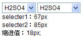
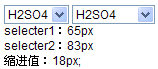
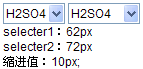

HF2016: 对于 SELECT 元素在使用 OPTGROUP 元素对 OPTION 元素进行分组时，OPTION 元素分组中下拉列表项的缩进不同
标准参考
SELECT 元素用来实现一个下拉列表，而 OPTGROUP OPTION 用来对 SELECT 元素中的下拉列表项进行逻辑分组，并且所有的 OPTGROUP 元素必须在 SELECT 元素中直接指定，分组不允许嵌套。
关于 SELECT OPTGROUP OPTION 可以参考 W3C HTML4.1 中 17.6 The SELECT, OPTGROUP, and OPTION elements 的描述。
问题描述
对于 SELECT 元素在使用 OPTGROUP 元素对 OPTION 元素进行分组时，在各浏览器中由 OPTGROUP 元素创建的缩进量不同，这会导致未具体设定宽度的替换元素根据内在宽度显示后，各浏览器中显示效果不一。
造成的影响
在没有给 SELECT 元素设定具体宽度的情况下，由于 OPTGROUP 元素创建的缩进量不同，会导致各浏览器中 SELECT 元素实际显示宽度不一，有可能使页面局部布局产生差异。
受影响的浏览器
| 所有浏览器 |
|---|
问题分析
分析以下代码：
<!DOCTYPE html> <html> <head> <title></title> <style type="text/css"> option, optgroup, select { font-family:Arial; font-size:12px; } optgroup{ padding:0;margin:0; } </style> <script> window.onload=function(){ $("info").innerHTML="selecter1："+$("selecter1").offsetWidth+"px<br/>" +"selecter2："+$("selecter2").offsetWidth+"px<br/>" +"缩进值："+($("selecter2").offsetWidth-$("selecter1").offsetWidth)+"px"; } function $(id){return document.getElementById(id);} </script> </head> <body style="font-family:Arial, Helvetica, sans-serif;font-size:12px;"> <select id="selecter1"> <option>H2SO4</option> <option>盐酸</option> <option>硝酸</option> <option>H2S</option> <option>碳酸</option> <option>硼酸</option> </select> <select id="selecter2"> <optgroup label="强酸"> <option>H2SO4</option> <option>盐酸</option> <option>硝酸</option> </optgroup> <optgroup label="弱酸"> <option>H2S</option> <option>碳酸</option> <option>硼酸</option> </optgroup> </select> <div id="info"></div> </body> </html>
以上代码中创建了两个个 SELECT 元素，其中 "selecter1" 元素是没有设置分组的，其作用是用来做为在各浏览器中的参考，然后利用 OPTGROUP 元素对 "selecter2" 元素中的 OPTION 元素进行分组，最后获得这两个 SELECT 元素的差值，此差值即为此例中 "selecter2" 元素分组后产生的缩进值。
同时 OPTGROUP 元素的 'padding' 和 'margin' 特性值均设置为 0 ，用此尝试避免 OPTGROUP 元素本身会存在浏览器默认样式，使其内的 OPTION 元素定位产生差异。
在各浏览器中的运行结果截图如下：
| IE6 IE7 IE8(Q) | IE8(S) | Safari |
|---|---|---|
|  |  |  |
| Firefox Chrome | Opera | |
 |
 |
从运行结果截图中可知，即使将 OPTGROUP 元素中的 'padding' 和 'margin' 特性值设定为 0，各浏览器中 OPTGROUP 元素内的 OPTION 标记的缩进量依旧都不相同。
解决方案
无法避免 OPTGROUP 元素产生的缩进值不同问题。但是可以通过为 SELECT 元素设定具体宽度，达到不因此问题影响布局的目的。
如果确实需要精确控制选项组布局，只能有过使用脚本语言构造自定义选择框才能实现。
参见
知识库
相关问题
测试环境
| 操作系统版本: | Windows 7 Ultimate build 7600 |
|---|---|
| 浏览器版本: |
IE6 IE7 IE8 Firefox 3.6.10 Chrome 8.0.552.11 dev Safari 5.0.2 Opera 10.62 |
| 测试页面: | optgroup.html |
| 本文更新时间: | 2010-10-13 |
关键字
SELECT OPTION OPTGROUP